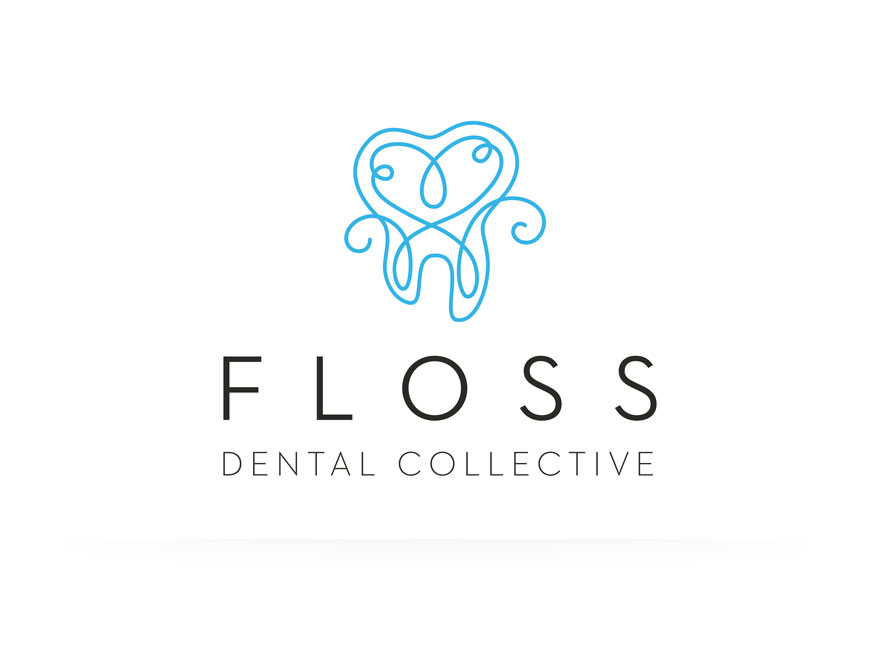
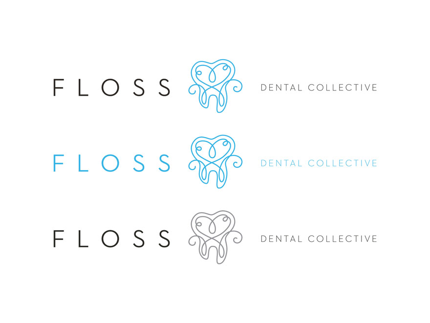

<!--Work Preview section-->
<section class="offset section">
			
	<!--Inner content-->
	<div class="innerContent">

		<!--Container-->
		<div class="container clearfix">
			<div class="fifteen columns">
				<div class="work-preview-close"></div>
			</div>
		</div>
		<!--Container-->
		
		<!--Container-->
		<div class="container clearfix">

			<div class="fifteen columns">

				<!--slider-->
				<div class="work-preview-slider clearfix flexslider" >

					<div>

						<ul class="slides">
							
							<li>
								
							</li>
							
							<li>
								
							</li>

						</ul>

					</div>
					
				</div>
				<!--slider-->

			</div>


			<div class="fifteen columns work-info">
				<h1 class="title">Floss Dental Collective<br><span>Branding</span></h1>
				<p>Led by honesty and fairness, Floss Dental Collective's practice is committed to providing their patients with quality dental care through an integrated approach.</p>

				<p>As Floss's main objective was to attract a new generation of patients, the logo had to appeal to a younger demographic while also conveying professionalism. The icon combines dental floss with a tooth in a surprising and visually pleasing way. The soft curls of the shape keep the identity light and fun – fitting well with the Floss name and ideals.</p>

				<!--<div class="social-icons">
					<ul>
						<li><i class="step fi-heart"></i><span>100</span></li>
						<li><i class="step fi-social-facebook"></i><span>620</span></li>
						<li><i class="step fi-social-twitter"></i><span>450</span></li>
						<li><i class="step fi-social-pinterest"></i><span>100</span></li>
					</ul>
				</div>-->

			</div>


		</div>
		<!--Container-->
	
	</div>
	<!--Inner content-->

	
</section>